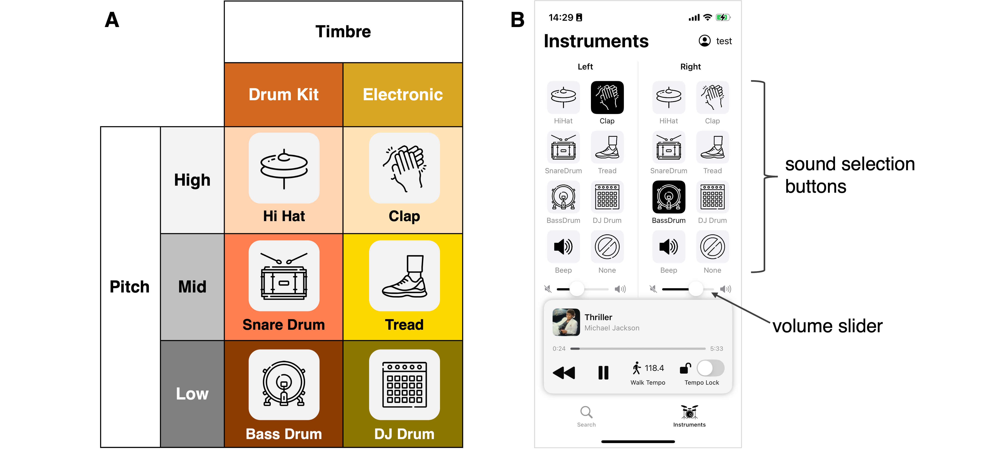

音楽の中でドラムを叩くように歩き、身体運動を演奏へと昇華させる iOS アプリケーション。 An iOS application that transforms walking into a musical performance, as if playing drums within the music.

「歩行」という日常の単調な繰り返しを、主体的な「演奏」へと変容させるプロジェクトです。ユーザーの歩行リズムに合わせて音楽のビートを生成・変化させることで、既定の時系列構造を自ら書き換える体験を設計しました。
This project aims to transform the monotonous daily routine of "walking" into a proactive "performance". By generating and changing musical beats in sync with the user's walking rhythm, we designed an experience where users can rewrite the predefined temporal structure themselves.
体験の社会実装を目的に「株式会社Beatim」を設立しました。iOSアプリとして開発を行い、音楽と身体運動の統合による新しいウォーキング/ランニング体験を提供しています。
Beatim Inc. was established to implement this experience in society. Developed as an iOS application, it offers a new walking/running experience through the integration of music and physical movement.